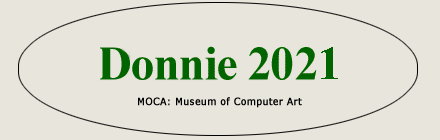

DONNIE 2021 FULL INFORMATION
The Donnie 2021 is our 21st consecutive annual digital art contest and exhibit. It is international in scope and open to all digital artists, beginner or advanced, including photographers. Test your mettle. Compete with the best. Give new life to your art. The Donnies are one of the most prestigious and influential digital art competitions on the Web.Contest closes for entries Sunday, January 31, 2021, 11:59 P.M. (ET).
FEES
Fee is just $69.00 per image. Payment via PayPal or credit card. Click link top of page.
Maximum six entries per artist. Still images only. JPG format. Image size 1 - 2 megabytes each. Images are submitted via email attachment.
Contest offers eight awards: first, second and third prizes plus five honorable mentions and 12 director's choices. Winning images are awarded year-long exposure on the MOCA site.
MOCA is a not-for-profit educational and charitable organization, chartered by the New York State Department of Education (USA). It enjoys 501 (c) (3) tax exempt status granted by the IRS. It is supported by contest fees and the contributions of artists, viewers, and friends. It has been the Web's primary showcase for digital art for more than 25 years.
Contest judge is H. Gay Allen. Gay is a distinguised professional photographer and computer artist based in Atlanta, Ga. She was called "the driving force behind the emerging digital/computer art scene." She has curated many photo art shows and been awarded many honors for her own creative work.
MOCA will publish a full-color catalog of the contest (at extra charge). To browse or order among our 25 published catalogs, click CATALOGS.
Comments, inquiries, questions? Write:
don@moca.virtual.museum
Don Archer, MOCA director and contest administrator